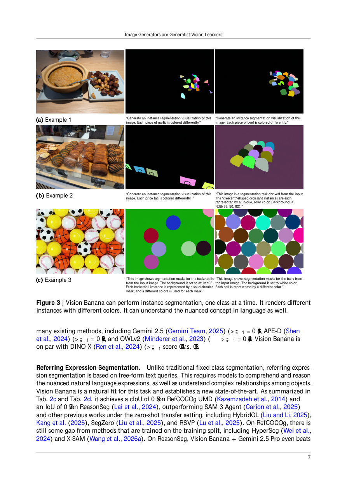

#1
★ 9/10
Image Generators are Generalist Vision Learners
图像生成器是通用视觉学习器

图 Figure · Page 7 of paper
🎯 图像生成预训练可赋能通用视觉理解，在2D和3D任务上达到SOTA
Image generation pretraining enables state-of-the-art generalist vision understanding across 2D and 3D tasks.
| 维度 | 中文 | English |
|---|---|---|
| ❓ 待解决 的问题 |
构建能处理多种视觉任务（分割、深度估计等）的通用模型，通常需要针对每个任务设计专用架构或进行大规模有监督训练，代价高昂。长久以来，研究者猜测：能生成逼真图像的模型必然隐式地"理解"视觉内容——但这一假设缺乏有力的实验验证。图像生成作为视觉预训练范式（类比文本生成之于LLM）的可行性尚未被证实。 | Building a single model that can handle diverse vision tasks (segmentation, depth estimation, etc.) typically requires task-specific architectures or large-scale supervised training per task. It has long been speculated that a model capable of generating realistic images must implicitly understand visual content — but this hypothesis lacked strong empirical proof. The field has not yet established image generation as a credible pretraining paradigm analogous to how text generation powers modern LLMs. |
| 💡 解决 的亮点 |
• **统一输出空间**：将分割、深度估计等所有视觉感知任务统一表示为RGB图像输出，无需修改模型架构即可处理多种任务。 • **轻量指令微调**：在已有图像生成模型（Nano Banana Pro）基础上，仅用少量视觉任务数据进行指令微调，即可获得强大的理解能力，且不损失原始生成能力。 • **范式转变论证**：首次提供有力实验证据，表明图像生成预训练类似LLM中的文本生成预训练，能涌现出通用视觉理解能力，有望成为计算机视觉新基础范式。 | • **Unified output space**: All vision tasks (segmentation, depth, etc.) are reframed as RGB image generation, allowing a single generative model to handle perception without architectural changes. • **Lightweight instruction-tuning**: Vision Banana is built by fine-tuning an existing image generator (Nano Banana Pro) on a small mixture of task data, preserving the base model's generative ability while gaining strong understanding capabilities. • **Paradigm-shift claim**: Provides empirical evidence that image generation pretraining, like LLM text generation pretraining, yields emergent generalist visual understanding — a potential new foundation for computer vision. |
| 🧪 实验 内容 |
本文在涵盖2D和3D理解的多个标准视觉基准上评估Vision Banana，包括语义分割、实例分割、度量深度估计和表面法线估计等任务。基线模型包括专为分割设计的Segment Anything Model 3（SAM3）和专为深度估计设计的Depth Anything系列。评估采用零样本协议，与未在目标数据集上微调的专家模型进行公平比较。 | Vision Banana was evaluated on a diverse suite of vision benchmarks spanning both 2D and 3D understanding tasks, including semantic segmentation, instance segmentation, metric depth estimation, and surface normal estimation. Baselines included strong zero-shot domain specialists such as Segment Anything Model 3 (SAM3) for segmentation and the Depth Anything series for metric depth. The evaluation followed standard zero-shot protocols to fairly compare against specialist models that were not fine-tuned on the same target datasets. |
| 📊 实验 结果 |
Vision Banana在多个基准上取得SOTA成绩：在分割任务上击败或媲美SAM3，在度量深度估计上超越Depth Anything系列——且无需任务专属架构改动。实验表明，仅用少量任务数据进行轻量指令微调，即可达到甚至超越领域专家模型的性能水平，同时保留基础模型的完整图像生成能力。摘要中未披露具体数字，但论文报告在2D和3D理解基准上相对零样本专家模型均取得一致性SOTA表现。 | Vision Banana achieves SOTA results across multiple benchmarks: it beats or rivals SAM3 on segmentation tasks and outperforms the Depth Anything series on metric depth estimation — all without task-specific architectural modifications. The model demonstrates that lightweight instruction-tuning (on a small amount of task data) is sufficient to reach specialist-level performance, while maintaining full image generation capability of the base model. Specific numerical results were not disclosed in the abstract but the paper reports consistent SOTA across both 2D and 3D understanding benchmarks against zero-shot specialists. |
| 🏁 结论 | 本文证明了图像生成预训练能赋予模型强大且可迁移的视觉表征，通过轻量指令微调即可在多种视觉任务上达到通用SOTA水平。这确立了图像生成作为视觉统一接口的地位，其范式意义类比于文本生成在NLP领域的基础性作用。 | This paper proves that image generation pretraining endows models with powerful, transferable visual representations that enable generalist SOTA performance across diverse vision tasks via lightweight instruction-tuning. It establishes image generation as a universal interface for vision — a paradigm-level contribution analogous to text generation's foundational role in NLP. |
| 🔗 论文 链接 |
arXiv: 2604.20329v1 · 📥 PDF | |
⚙️ Method · 方法详解
作者以预训练图像生成模型Nano Banana Pro（NBP）为基础，将其在原始生成训练数据与少量视觉任务标注数据的混合集上进行指令微调。核心思路是：将分割掩码、表面法线、深度图等所有感知任务的输出统一编码为RGB图像。这样，模型只需根据输入图像和文本指令"生成"对应的任务输出图像，无需任何任务专属解码头或适配层。最终得到的Vision Banana是一个单一通用模型，可无缝切换生成与理解两种模式。
The authors take a pre-trained image diffusion/generation model called Nano Banana Pro (NBP) and instruction-tune it on a mixture of its original generative training data and a small amount of labeled vision task data. The key insight is to parameterize all perception task outputs — such as segmentation masks, surface normals, and depth maps — as RGB images. This means the model simply "generates" a task-specific output image given an input image and a text instruction, requiring no task-specific heads or decoders. The resulting model, Vision Banana, is a single generalist that seamlessly switches between generation and understanding modes.
📐 Key Formulas · 关键公式
\[\hat{y} = G_{\theta}(x, t)\]
💡 Vision Banana的统一推理框架：给定输入图像 x 和任务文本指令 t，生成模型 G（参数为θ）直接输出对应的感知结果图像 ŷ（如深度图、分割掩码等）。
The unified inference framework of Vision Banana: given an input image x and a task text instruction t, the generative model G (with parameters θ) directly outputs the corresponding perception result image ŷ (e.g., depth map, segmentation mask).
🌟 Why It Matters · 为什么重要
这项工作打破了生成式与判别式视觉模型长期以来的壁垒，表明二者可在统一的生成预训练范式下融合——正如GPT式预训练统一了NLP领域。若该结论在更大规模上得到验证，将从根本上改变视觉基础模型的构建方式，使昂贵的任务专属预训练成为历史。
This work challenges the longstanding separation between generative and discriminative vision models, showing they can be unified under a single generative pretraining paradigm — just as GPT-style pretraining unified NLP. If validated at scale, this could fundamentally reshape how the community builds vision foundation models, making expensive task-specific pretraining obsolete.